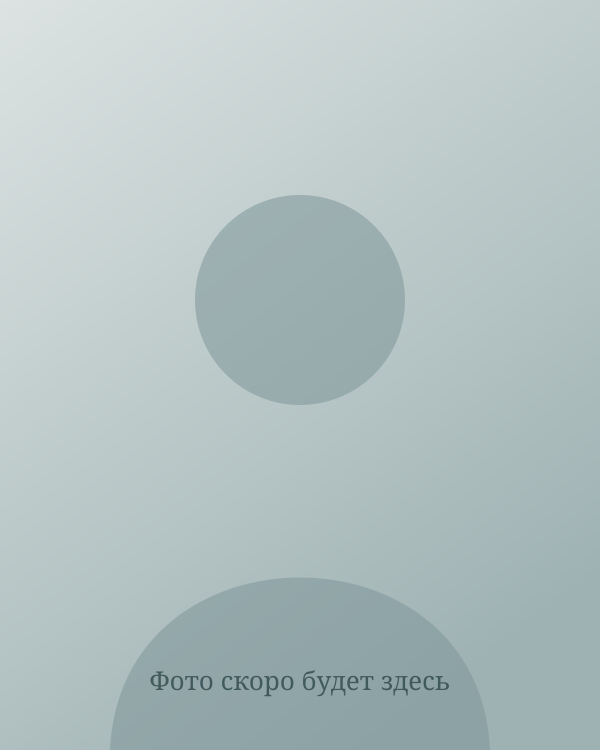

Личная история
Как я пришла в коучинг
Я давно думала про коучинг. Но всё откладывала: «не время», «большая загрузка», «вот когда-нибудь». А потом оказалась на Алтае.
Это была поездка для сотрудников, которых компания наградила за лучшие результаты 2025 года. И там, среди гор и тишины, я вдруг поняла: следующий шаг — вот он. Пора.
Может быть, потому что впервые я начала говорить публично на тему, которая мне по-настоящему интересна. Мы с Еленой Балаян, коммерческим директором и тоже тренером по нейроинтеграции, сделали тренинг «Нейробиология успеха». И это было не про «передать знания», а про живой разговор, который зацепил коллег.

Что стало толчком — сам тренинг, душевные разговоры по вечерам или матушка-природа (Алтай ведь особое место), — не важно. Важно, что я приняла решение. И сделала.
Что для меня коучинг
Это не про то, чтобы «починить» прошлое. Это про будущее. Про то, куда вы хотите прийти — и какие шаги для этого есть уже сейчас. Коучинг не даёт советов. Он помогает услышать себя.
Больше двадцати лет я работаю с командами и людьми. И всегда видела: чтобы помогать людям расти, мало желания — нужны техники, которые действительно двигают вперёд. Развитие и помощь людям в движении вперёд для меня давно уже не работа, а философия жизни.